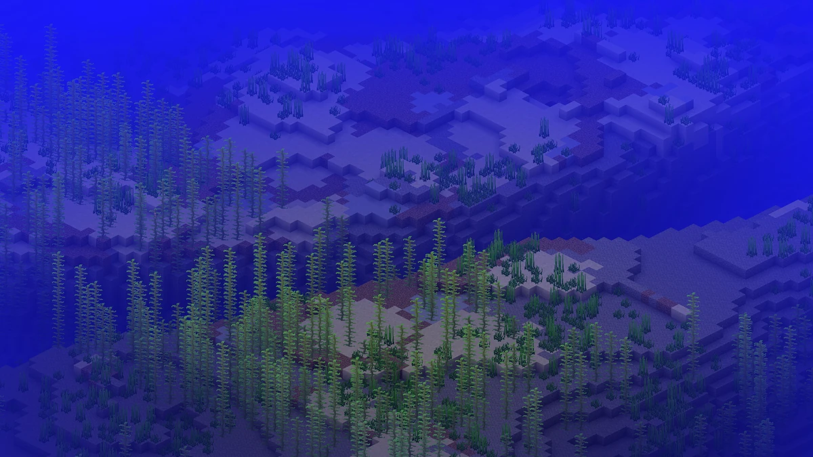
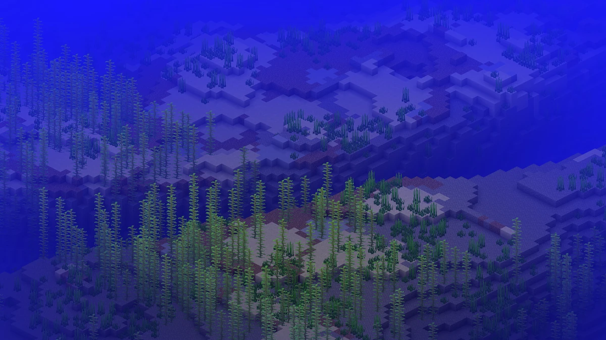

Minecraft is a sandbox computer game originally developed by Swedish programmer Markus "Notch" Persson and his company Mojang. Mojang, including the game, has been owned by Microsoft since September 2014, which bought the company for $2.5 billion. Minecraft was first released on May 17, 2009 as an Early Access title for PC. Subsequently, Minecraft was released for various other platforms and game consoles. Most of them still receive regular free updates with new content. In the game, the player creates constructions such as buildings or circuits from mostly cube-shaped elements in a freely accessible, procedurally generated world, which also consists of cubes. This nature-inspired game world can also be explored to collect resources, fight monsters and process found raw materials into new items. There is a variety of user-generated content such as modifications, servers, skins, texture packs, and pre-built worlds that add new mechanics and game modes to the game. The game is also used in education to teach chemistry, computational design, and computer science, among other things. Minecraft has received critical acclaim, received numerous awards, is considered one of the most influential computer games of the 2010s, and is the best-selling computer game to date, with more than 238 million copies sold. With over 140 million monthly active users, it is also the computer game with the most active players that is not based on the free-to-play business model. Social media, parodies, adaptations, merchandise, and the annual MineCon conventions were instrumental in popularizing the game. Over time, several spin-offs of the game have been developed, including Minecraft: Story Mode, Minecraft Earth, Minecraft Dungeons, and Minecraft Legends. There are five game modes in Minecraft. A distinction is made between survival mode, hardcore mode, which is a special variant of survival mode, creative mode, which is best suited for creating large structures, and adventure mode, which is intended for playing so-called adventure maps created by other players and offered for download, and spectator mode. There are four levels of difficulty to choose from. In this way, the appearance of monsters can also be turned off completely. [16] All game modes can be played in single and multiplayer modes. On the server side, Minecraft only has four game modes: survival mode, creative mode, adventure mode, and spectator mode. Hardcore mode is technically the same as survival mode.
.jpg) 
